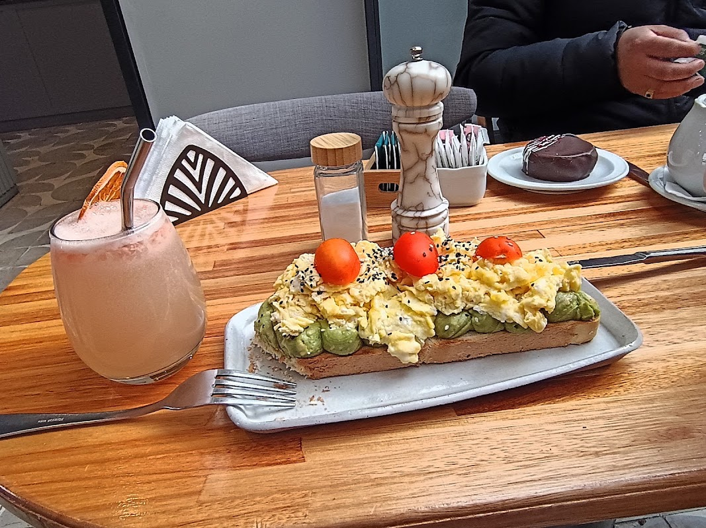
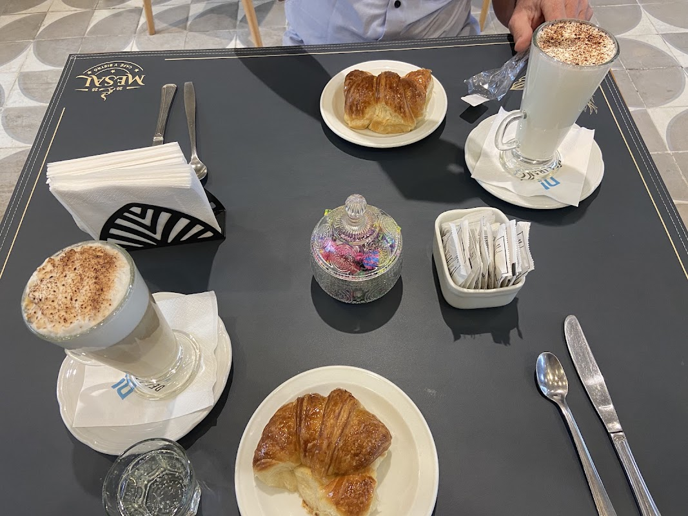

Mañana
Café y pastelería artesanal para arrancar el día.
08:00 – 00:00
El día
Elaboración propia de la mañana a la medianoche — café, pastelería y bistró para el vecino de Esquel.
Mañana
Café y pastelería artesanal para arrancar el día.

Mediodía
Platos reales para almorzar sin apuro.

Noche
Coctelería y tapeo hasta las 00:00.
Reseñas
4,9★ · 281 reseñas
Cómo llegar
Centro de Esquel, Chubut. Todos los días de 08:00 a 00:00.